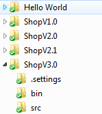
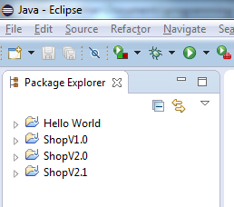
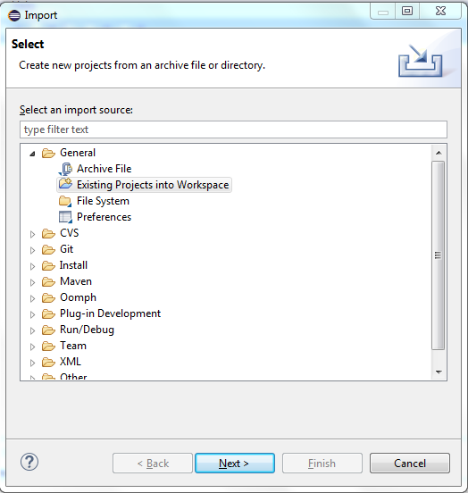
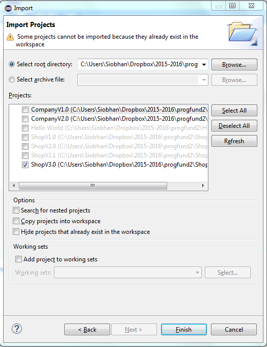
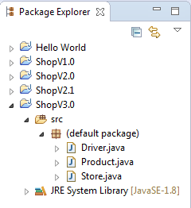
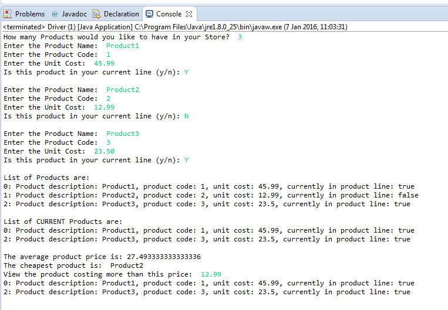
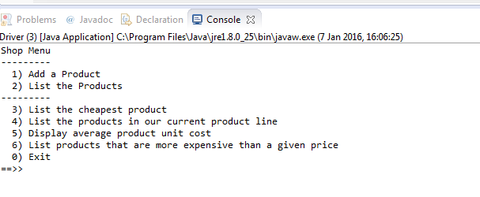
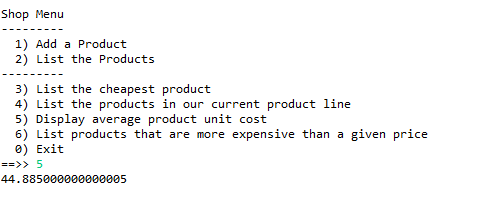

Objectives
On completion of this lab you should:
be more familiar with the Eclipse IDE.
understand and be able to use an ArrayList data structure.
be able add a menu driven approach to the Shop console app.
Starting ShopV3.0
In this step, you will download the starting point for ShopV3.0 (i.e. ShopV2.1 solution) and import it into Eclipse.
In the following steps:
- you will remove the primitive array and use an ArrayList instead.
- when you are successfully using an ArrayList, you will then add a menu to control the user interaction with your app.
Downloading ShopV3.0
Download the solution to the previous lab (i.e. ShopV2.1) from here.
Unzip it into your Eclipse workspace folder i.e. where all your Eclipse projects are stored.
Your workspace folder structure should look something like this:

Importing into Eclipse
Launch the Eclipse application.
You will see that your ShopV3.0 app does not appear in the Package Explorer:

You need to manually import existing projects into Eclipse. To do this, select File, followed by Import... from the menu bar.
When the import dialog window appears, select the Existing Projects into Workspace as shown:

Click the Next> button. Then browse to your workspace directory. A list will be displayed containing:
- already imported projects (greyed out)
- non-imported projects (they will have a checkbox beside them).
Check the ShopV3.0 project as shown in this picture:

Click the Finish button.
Your project should be imported:

Test the imported project
- Run ShopV3.0 to both test it and also familiarise yourself with the project.
Refactoring the Store Class
- In this step, you will refactor (change) the Store class so that it no longer uses a primitive array, but uses an ArrayList.
Import the ArrayList class
- To use the ArrayList in our Store class, we need to import it:
import java.util.ArrayList;Declaring an ArrayList
Currently we are using a primitive array and we keep track of how many items are added using the total field:
private Product[] products; private int total;As an ArrayList automatically grows and shrinks as you add/remove elements, there is no need for the total field anymore. Delete this field.
The products instance field should now be:
private ArrayList<Product> products;The Store Constructor
- Currently the Store constructor looks like this:
public Store(int numberItems){
products = new Product[numberItems];
total = 0;
}- As an ArrayList doesn't need to know the maximum number of items that will be stored, we can delete the parameter numberItems. We can also remove the initialisation of total. We will instantiate the products ArrayList too. Your constructor should look like this:
public Store(){
products = new ArrayList<Product>();
}The add method
- Currently the add method looks like this (see below). As a primitive array has a maximum capacity, you have to check if the array is full before attempting to add a Product to it. As the add can fail due to space restrictions, you also need to return a boolean status for the add. The total field also needed to be maintained.
public boolean add(Product product){
if (!isFull()){
products[total] = product;
total++;
return true;
}
else{
return false;
}
}- As the ArrayList grows as you add Product objects to it, you don't need to check for spare capacity, check for successful adds, nor do you have to maintain the total items entered (an ArrayList does this for us). Our new add method will simply look like this:
public void add (Product product){
products.add (product);
}The listProducts method
- Currently the listProducts method looks like this:
public String listProducts(){
if (isEmpty()){
return "No products";
}
else{
String listOfProducts = "";
for (int i = 0; i < total; i++){
listOfProducts = listOfProducts + i + ": " + products[i] + "\n";
}
return listOfProducts;
}
}- Rewrite the method so that it looks like this:
public String listProducts(){
if (products.size() == 0){
return "No products";
}
else{
String listOfProducts = "";
for (int i = 0; i < products.size(); i++){
listOfProducts = listOfProducts + i + ": " + products.get(i) + "\n";
}
return listOfProducts;
}
}- Or if you prefer to use the for-each loop, you can replace it with this:
public String listProducts(){
if (products.size() == 0){
return "No products";
}
else{
String listOfProducts = "";
int index = 0;
for (Product product : products){
listOfProducts = listOfProducts + index + ": " + product + "\n";
index ++;
}
return listOfProducts;
}
}The listCurrentProducts method
Having rewritten the listProducts method, refactor this method body so that it is the exact same.
Include, inside the for loop, the following test so that only those products in the current product line are added to the String to be returned:
if (products.get(i).isInCurrentProductLine())The listProductsAboveAPrice method
- Having worked on the other two list methods above, have a go at converting this to handle ArrayList instead of a primitive array.
The averageProductPrice method
- Currently, the method looks like this:
public double averageProductPrice()
{
if (!isEmpty()){
double totalPrice = 0;
for (int i = 0; i < total; i++){
totalPrice = totalPrice + products[i].getUnitCost();
}
return totalPrice / products.length;
}
else
{
return 0.0;
}
}- Refactor the method so that it looks like this. Note that we have catered for an empty ArrayList...we don't want to accidentally divide by zero as it will crash our program (DivideByZeroException).
public double averageProductPrice()
{
if (products.size() != 0){
double totalPrice = 0;
for (int i = 0; i < products.size(); i++){
totalPrice = totalPrice + products.get(i).getUnitCost();
}
return totalPrice / products.size();
}
else{
return 0.0;
}
}The cheapestProduct method
- Having refactored the previous methods, have a go at converting this to handle ArrayList instead of a primitive array.
isEmpty and isFull methods
- There is no need for these methods when using ArrayLists, so you can simply delete them.
Refactoring the Driver Class
- In this step, you will refactor (change) the Driver class so that any changes we made to the Interface of the Store class are reflected in this class.
Store Constructor
The only change that we made to the Interface of the Store class is the Store Constructor.
By using an ArrayList, we removed the need to know the size of the collection at the start of the program. For this reason we deleted the numberItems from the Store constructor's parameter list.
In the Driver class, in the processOrder method, you will find this code:
//find out from the user how many products they would like to order
System.out.print("How many Products would you like to have in your Store? ");
int numberProducts = input.nextInt();
store = new Store(numberProducts);For the moment, leave the code in that asks the user how many products they want to enter.
Just remove the parameter that is passed to the Store constructor. This code should now be:
store = new Store();Run and Test
Try running your code; the functionality for the user should not have changed in any way.
Your output should look similar to this:

Menu Driven App
At this stage, you should have refactored ShopV3.0 so that it uses an ArrayList instead of a primitive array. If you had difficulty with it, here is the interim solution that you can download and import into Eclipse.
You will notice in our code that we are still asking the user how many products they want to add. This is very restrictive for a user; they cannot add more products later on, nor can they choose what items they would like to list, etc. The user has no level of control over our system.
For this reason, we are going to add a menu to our console app so the user can choose what they would like to do with their products:

- As the Driver class controls the I/O, all our changes will be made in this class; Store and Product will not change.
Driver Class I/O
- Currently, the I/O is controlled by the main method with calls to methods of the Driver class:
public static void main(String[] args) {
Driver c = new Driver();
c.processOrder();
c.printProduct();
c.printCurrentProducts();
c.printAverageProductPrice();
c.printCheapestProduct();
c.printProductsAboveAPrice();
}- As we will call these methods from our menu code, you can delete all of these method calls. Your main method should now look something like this:
public static void main (String args[]){
Driver app = new Driver();
}Driver constructor
- Currently, the Driver constructor is like this:
public Driver(){
input = new Scanner(System.in);
}- Move the line of code that creates an object of the Store class to the constructor:
public Driver(){
input = new Scanner(System.in);
store = new Store();
}- You can now delete the processOrder method; the menu will perform this processing for us.
Driver methods (except the add one)
- The following methods (except the add one) print out a bit of information to the user to give them context on the data that is being printed:
private void printProduct(){
System.out.println("List of Products are:");
System.out.println(store.listProducts());
}
private void printCurrentProducts(){
System.out.println("List of CURRENT Products are:");
System.out.println(store.listCurrentProducts());
}
private void printAverageProductPrice(){
System.out.println("The average product price is: " + store.averageProductPrice());
}
private void printCheapestProduct(){
System.out.println("The cheapest product is: " + store.cheapestProduct());
}
private void printProductsAboveAPrice(){
System.out.print("View the product costing more than this price: ");
double price = input.nextDouble();
System.out.println(store.listProductsAboveAPrice(price));
}As the user will select, from a menu system, what they want to print, there is no need for the added detail to be printed out.
Delete all of these methods; instead we will just call the store.xxx method directly from the main menu.
mainMenu method
- Enter the following code into the Driver class:
/**
* mainMenu() - This method displays the menu for the application,
* reads the menu option that the user entered and returns it.
*
* @return the users menu choice
*/
private int mainMenu(){
System.out.println("Shop Menu");
System.out.println("---------");
System.out.println(" 1) Add a Product");
System.out.println(" 2) List the Products");
System.out.println("---------");
System.out.println(" 3) List the cheapest product");
System.out.println(" 4) List the products in our current product line");
System.out.println(" 5) Display average product unit cost");
System.out.println(" 6) List products that are more expensive than a given price");
System.out.println(" 0) Exit");
System.out.print("==>> ");
int option = input.nextInt();
return option;
}runMenu method
- Enter the following code into the Driver class...this method controls the looping of the menu and calls the appropriate methods based on the user choice:
private void runMenu(){
int option = mainMenu();
while (option != 0){
switch (option){
case 1: addProduct();
break;
case 2: System.out.println(store.listProducts());
break;
case 3: System.out.println(store.cheapestProduct());
break;
case 4: System.out.println(store.listCurrentProducts());
break;
case 5: System.out.println(store.averageProductPrice());
break;
case 6: System.out.print("Enter the price barrier: ");
double price = input.nextDouble();
System.out.println(store.listProductsAboveAPrice(price));
break;
default: System.out.println("Invalid option entered: " + option);
break;
}
//pause the program so that the user can read what we just printed to the terminal window
System.out.println("\nPress any key to continue...");
input.nextLine();
input.nextLine(); //this second read is required - bug in Scanner class; a String read is ignored straight after reading an int.
//display the main menu again
option = mainMenu();
}
//the user chose option 0, so exit the program
System.out.println("Exiting... bye");
System.exit(0);
}Calling the menu
- As the last statement in the Driver constructor, call the runMenu() method:
public Driver(){
input = new Scanner(System.in);
store = new Store();
runMenu();
}Run the App
Run the app; does all work as expected?
Test it and see if you can identify any bugs. If you come across any, try fix them.
Formatting decimal output
- Did you notice that the average product price is not limited to two decimal places?

toTwoDecimalPlaces
We are going to just truncate this to two decimal places.
Add the following helper method to the Store class:
private double toTwoDecimalPlaces(double num){
return (int) (num *100 ) /100.0;
}- Currently, your averageProductPrice method should look something like this:
public double averageProductPrice()
{
if (products.size() != 0){
double totalPrice = 0;
for (int i = 0; i < products.size(); i++){
totalPrice = totalPrice + products.get(i).getUnitCost();
}
return totalPrice / products.size();
}
else{
return 0.0;
}
}- When returning the result of the average calculation, we want to call our new toTwoDecimalPlaces method to truncate the result to two decimal places:
public double averageProductPrice()
{
if (products.size() != 0){
double totalPrice = 0;
for (int i = 0; i < products.size(); i++){
totalPrice = totalPrice + products.get(i).getUnitCost();
}
return toTwoDecimalPlaces(totalPrice / products.size());
}
else{
return 0.0;
}
}- Make this change and test your app to make sure your result is truncated to two decimal places.
Exercises
Over the next few weeks, we will develop a Menu Driven DVD app.
Today, you will work on Phase 1 of this application; it presents the user with a simple menu for adding and listing DVD titles.
Menu Driven DVD app - phase 1
Create a new project in Eclipse called DVDLibraryV1.0.
DVD class
Within the current project, create a new class called DVD. In this class
Add an instance field, called title, that will store the title of the DVD.
Add a default empty constructor (we will cover why in later labs).
Add a constructor that takes in the title as a parameter and updates the instance field, title.
Add an accessor and a mutator for the title field.
Add a toString method that formats the object state to a user-friendly string.
Library class
Within the current project, create a new class called Library. In this class:
Add an instance field called dvds that can hold an ArrayList of DVDs.
Add a constructor that instantiates the above ArrayList.
Add a method add() that accpets a DVD object as a parameter. This method should add the passed DVD object to the dvds ArrayList.
Add a method listDVDs() that returns a String comprising the index number and the title of each DVD in the dvds ArrayList. If there are no dvds in the ArrayList, the String "No DVDs" should be returned.
Driver class
Within the current project, create a new class called Driver. In this class:
Add an instance field called library that is of type Library.
Add a constructor that instantiates the above library field.
Create a Scanner object that can be used by all methods in the class.
Add a private method called addDVD() that has a void return type. This method should read the title of the DVD from the user. It should also include the following line of code:
library.add(new DVD(dvdTitle));NOTE: This line of code:
creates a DVD object with the title entered by the user.
calls the add method in the Library class to add the DVD object to the dvds ArrayList.
- Add a private method mainMenu() that has an int return type. This method should display the name of the menu and the menu options (see Figure 1). This method should read the menu option that the user entered and return it.

- Add a private method run() that has a void return type. This method should look like this:
private void run()
{
int option = mainMenu();
while (option != 0)
{
switch (option)
{
case 1:
addDVD();
break;
case 2:
System.out.println(library.listDVDs());
break;
default:
System.out.println("Invalid option selected.");
break;
}
//display the main menu again
System.out.println("");
option = mainMenu();
}
System.out.println("Exiting... bye");
}- Then write a main method that will create an instance of itself (i.e. the Driver class) and call the run method over this instance (see the code below).
public static void main (String[] args)
{
Driver app = new Driver();
app.run();
}Run and Test
Run the project (as a Java Application).
Test adding a DVD and listing them. Try listing the DVDs when no DVDs have been entered.
When you are finished this lab, zip your work into one file and upload it into lab02 dropbox in Moodle.